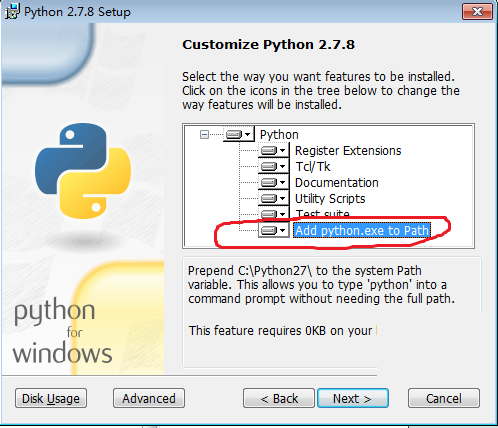

设备管理安装说明
一、FTP设置
1、打开“控制面板”的“程序和功能”：
2、进入到“程序和功能”的界面，选择左侧的“打开或关闭Windows功能”，打开“Windows”功能对话框：
3、展开“Internet信息服务”节点，发现默认情况下“FTP服务器”子节点并没有被选中，选中该子节点，点击“确定”按钮，Windows开始安装FTP服务（由于Win7的所有组件安装文件其实已经在Win7的安装过程中被拷贝到系统中，故不想WinXP下安装组件需要系统盘）：
在IIS中添加FTP站点
1、在“管理工具”的“Internet信息服务（IIS）管理器”中，选中服务器，点击右键菜单中的“添加FTP站点…”子菜单项：
2、在“添加FTP站点”对话框的“FTP站点名称”中输入你所期望的站点名称，并选择你期望用来存放文件的“内容目录”：这里指定D:\RecordFile,如果没有此文件请手动创建，并将D:\RecordFile的用户权限设置为Everyone用户完全控制：右键属性--安全--编辑--添加---高级---立即查找--搜索结果----Everyone---确定---确定---勾选所有允许选项---应用----确定
3、点击“下一步”按钮，进入IP地址绑定和SSL设置，由于我们这里不使用SSL，所以SSL选项选择“无”，至于什么是“SSL”，本人将在后续的文章中讲解：
4、继续点击“下一步”，进入到“身份验证和授权信息”环节，“身份验证”选择“匿名”和“基本”，“授权”的“允许访问”选择“所有用户”，“权限”选择“读取”：
5、点击“完成”按钮，完成FTP站点的添加过程。这时会发现IIS管理器“网站”节点下多了一项刚才添加的FTP站点：
二、码流设置
将Resource.xml替换C:\Program Files\Zonekey\Zonekey Config Service\ConfigInfoFiles下的Resource.xml
三、安装
安装zkdm-setup.exe
注意事项：安装python2.7.8的时候
